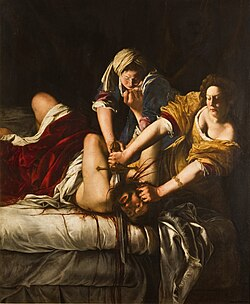
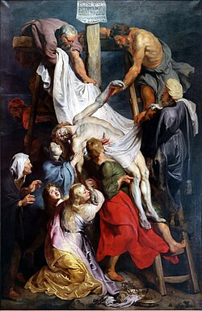
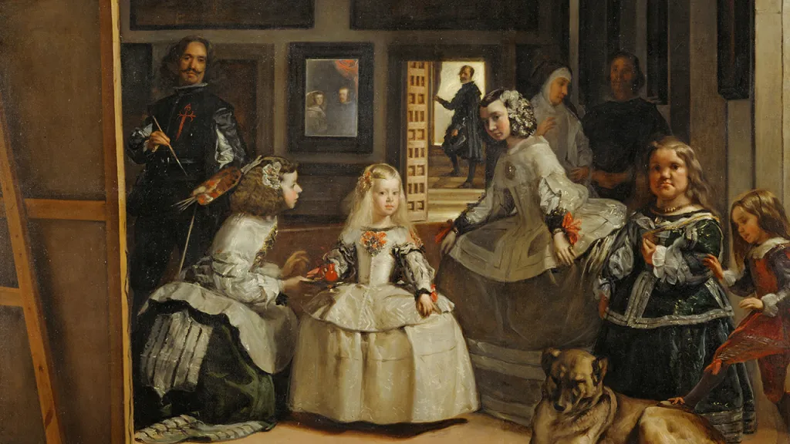
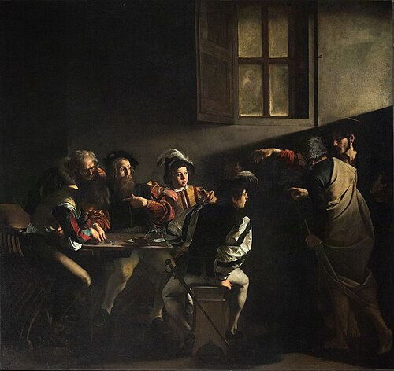
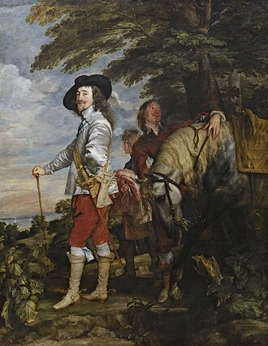
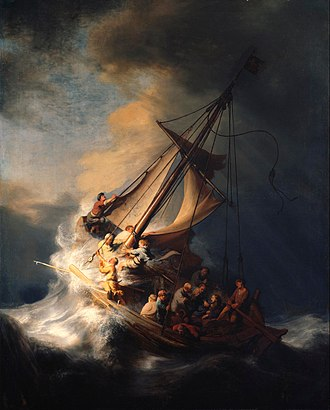

Tähtsus ja Mõju
Tähtsus
Euroopa kolonialismi ja misjonitöö kaudu levis baroki esteetika Roomast Aafrikasse, Aasiasse ja Ameerikasse, mõjutades mitmekesiseid kunstitraditsioone. Kunstnikud olid tugevad liikumise ja intensiivsete psühholoogiliste seisundite jäädvustamise tehnikates, liikudes stiliseeritud tavadest dünaamiliste ja realistlike elukujutiste poole.

Artemisia Gentileschi,
"Juudit tapab Holofernese"
Peter Paul Rubens,
"Ristilt mahavõtmine"
Diego Velázquez,
"Õuedaamid"Mõju
See liikumine tekkis protestantliku reformatsiooni taustal, kus katoliku kirik soovis oma võimu taaskehtestamiseks kasutada kunsti – nad tellisid vaataja emotsioonide esilekutsumiseks suuremahulisi dramaatilisi maale ja skulptuure.

Caravaggio,
"Püha Matteuse kutsumine"
Anthony van Dyck,
"Charles I jahil"
Rembrandt van Rijn,
"Torm Galilea järvel"